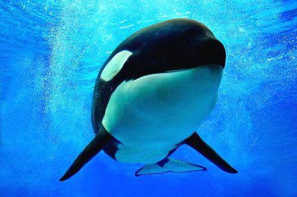

Peces:

HISTORIA DEL PEZ
Los peces (en latín pisces) son animales vertebrados primariamente acuáticos, generalmente ectotérmicos
(regulan su temperatura a partir del medio ambiente) y con respiración por branquias. Suelen estar recubiertos por escamas,
y están dotados de aletas, que permiten su movimiento continuo en los medios acuáticos, y branquias,
con las que captan el oxígeno disuelto en el agua. El grupo Pisces no es un taxón porque sería parafilético.
Los peces son abundantes tanto en agua salada como en agua dulce, pudiéndose encontrar especies desde los arroyos de montaña (por ejemplo, el gobio),
así como en lo más profundo del océano (por ejemplo, anguilas tragonas).
Los alimentos preparados con pescado son una importante fuente de alimentación para los seres humanos.
Pueden ser grandes partir de ejemplares silvestres, o criados de manera similar al ganado (véase acuicultura).
Hoy en día la llamada pesca deportiva cada día se vuelve una actividad más popular. Los peces han tenido
un papel importante en muchas culturas a través de la historia,
que van desde las deidades religiosas a temas de libros y películas.

HISTORIA DE LA ORCA ASESINA
La orca (Orcinus orca) es una especie de cetáceo odontoceto perteneciente a la familia Delphinidae (delfines oceánicos),
que habita en todos los océanos del planeta. Es la especie más grande de delfínido y la única existente actual reconocida
dentro del género Orcinus. Esta no puede permanecer mucho tiempo fuera del agua, ya que el peso la comprime,
limitando su respiración, liberando toxinas, rompiendo órganos (incluyendo huesos), y secándolas.
Este cetáceo posee una complexión robusta e hidrodinámica. La especie, como característica distintiva,
posee una aleta dorsal muy larga que llega a medir hasta 1,8 m en los machos y presenta una coloración blanca y
negra que se distribuye de manera particular, la cual es propia de cada individuo y permite distinguirlo de los demás.
La orca tiene un dimorfismo sexual marcado; las hembras son más pequeñas que los machos y tienen la aleta dorsal más corta.

HISTORIA DEL TIBURON
Los selaquimorfos o selacimorfos (Selachimorpha, del griego σελαχος, selachos, tiburón, y μορφή, morphé, forma) son un
superorden de condrictios (peces cartilaginosos) conocidos comúnmente con el nombre de tiburones, también llamados escualos.
Algunos grandes tiburones como el blanco y el toro, entre otros, son conocidos a veces con el nombre de jaquetones.
Se caracterizan por ser grandes depredadores. Los tiburones incluyen desde especies pequeñas de las profundidades marinas,
hasta el tiburón ballena, el mayor de los peces, el cual se cree puede llegar a medir una longitud de 18 m y
se alimenta únicamente de plancton. El tiburón sarda puede desplazarse a agua dulce y algunos ataques de tiburones han ocurrido en ríos.
Algunas de las especies mayores, en especial el tiburón mako y el tiburón blanco, son endotermos parciales,
capaces de mantener parcialmente su temperatura corporal por encima de la que tiene el medio acuático en el que viven.